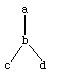

Emulating existing OOP styles in Ada83 requires solving a number of essentially orthogonal problems. We must provide for objects with object identity [Baker93], and this identity must be preserved by the normal value transmission operations of Ada83 (aggregation, selection, parameter passing, result returning, assignment, etc.). Objects may have lifetimes different from the control contexts in which they were created, and so require a flexible form of storage management--e.g., garbage collection. A companion paper [Baker91] discusses one solution to providing object identity and flexible storage management using Ada83's limited private types.
A second major problem that must be solved is that of coordinating the parallel execution of objects. Since implicitly coordinated parallel processing is one of the advertised advantages of OOP (e.g., the actor model of computation [Hewitt73] [Baker78] [Agha86] [Yonezawa87]), we must provide for this capability in any OOP system. Ada83 has provisions for parallel tasks, so it should be possible to map the parallel requirements of "actor-like" objects into Ada83. We will address this problem in a future paper.
Before we can state the third problem, which is the subject of this paper, we need some terminology. In OOP, objects have components called slots or instance variables, which are capable of storing state, as well as behavior implemented by means of methods or member functions. Objects with identical slot structure and identical methods belong to the same proper class; we say that an object is "of" a class if and only if the class is the proper class of the object. An object's proper class determines its structure and behavior. When defining a new class, one may designate one or more parent or super classes from which the new class inherits structure and behavior--i.e., its slots and methods; the new class is a child of its parent class(es). Objects of the child class also belong to the parent classes, as well to the grandparent classes, etc. If all classes in an OOP system have at most one parent, then we have a single inheritance system, while if one or more classes have multiple parents, then we have a multiple inheritance system. Since the slot structure of a child class in a single inheritance system is a superset of the slot structure of the parent, and since the representation of a child object typically incorporates the parent object's representation as a prefix, the child class is called an extension of the parent class.
A variable in an OOP system is an abstraction of a memory location whose contents can be modified through assignment. A object slot is a variable, as is a variable declared within a program; i.e., a program variable. If the programming language is a strongly typed language, we can discuss the type of a variable independent from the type of the variable's contents at any given time. The type of a variable is the set of all objects that the strong typing system will allow to occupy the variable; in Ada83 terminology, the type of a variable consists of the base type plus whatever additional constraints are placed on it by any discriminant, index or range constraints provided at its elaboration (the result of executing an Ada83 declaration, which execution usually allocates the necessary storage for the variable).[1]
A formal parameter in an OOP system is a name used within a subprogram which is bound to an object for the duration of a single execution of the subprogram. Since different objects may be bound to the formal parameter for different executions of the subprogram, the type of a parameter is the set of all objects that the strong typing system will allow to be bound to the parameter. In strongly typed programming languages such as Ada83, the typing system provides the same typing restrictions for both variable assignment and parameter binding.[2]
In Ada83, the concept of type is used for two different purposes. A variable of a certain type is capable of holding objects of a certain shape, and this shape is determined by the type of the variable. In addition, types are used to control subprogram overloading, where several different subprograms with the same name are distinguished at compile time by their parameter and result types. Ada83 also incorporates the notion of type derivation, wherein a single type can be cloned into different types, all of which have the same shape, but potentially different overloadings.
With this terminology established, we can now talk intelligently about using Ada83 types to implement OOP classes. We have only two choices in mapping the OOP concept of class onto Ada83's concept of type: implement each class with its own type, or implement all classes with a single type. The scheme presented in this paper utilizes both notions. From the "inside" of the implementation, all classes map into a single Ada83 type--an access type discriminated by a class ID which points to a discriminated record holding the slots appropriate to the class determined by the ID. We call this type the "base structure" type. From the "outside" of the implementation, the class user sees a number of distinct types, which happen to have all been derived from the same base structure type, and therefore have the same shape. Having a distinct type for each proper class allows the Ada compiler to perform method selection at compile time based on the different overloadings of the subprogram (method) names.
There are some subtleties in this scheme. In Ada83, a variable or parameter can have only one type; a value of that type can be stored in the variable (or be bound to the parameter). Since each class is represented by its own distinct type, then a variable of a type can hold only members of a particular class; in fact, it can hold only proper members of that class (i.e., objects which are not members of any subclass). The same restriction is also true of parameters. This restriction allows the behavior of any object stored in the variable or designated by the parameter to be determined by its class, but it does not allow typical OOP semantics in which any member of a class, including a member of a subclass, can be stored in a variable or designated by a parameter. If we wish to have "polymorphic" variables and parameters, which are capable of holding objects of more than one type, we must go to some additional trouble in Ada83.
The basic problem in emulating OOP behavior in Ada83 is that we either need polymorphic variables, which store objects of different classes, or we need polymorphic subprograms, which provide different behaviors for the same "message" for arguments of different classes.

We can consider each class to have exactly one direct (i.e., non-inherited) slot/instance variable without loss of generality, because this slot may be a record with any number of components, including zero.[3] The set of slots of each class is isomorphic to the set of ancestors of the class (including the class itself); e.g., the slots of class d are d's direct slot plus the slots inherited from a and b. Each slot requires two accessor subprograms--a reader function and a writer procedure; these are both called accessors. Slot accessors are inherited in a manner isomorphic to the slots themselves. The detailed slot structure is an issue only for the implementation of a class, because the slots themselves are hidden; only accessor subprograms are visible outside the class.
Ada83 requires a separate package for each level of derivation (3.4/15), in which we also define an assign procedure for converting to the polymorphic object type. Each class needs two types--one unconstrained and one constrained to its own class tag. The applications programmer should use the constrained type, because variables of this type can hold only objects with the correct class tag. The unconstrained type is used during the instantiation of the class behavior generic units, when a class may masquerade as another class in order to select the correct method. Masquerading types give us the additional power for emulating C++ virtual methods. In a final representation package, we define the constrained types, a constructor for each class, and an assignment from object to each constrained type. These constructors do not belong with the other ("instance") methods, because constructors are "class" methods. Any "class variables/slots" which are shared by all instances of the class should also be defined here. The body of this object initialization package is deferred until after the instance behavior package has been specified, so that instance methods may be called during object initialization.
If the types of the slots are recursive with the types of the classes
themselves, as is usual in Smalltalk-like systems, then we are forced to define
these slots in terms of "dummy" access types and use
unchecked_conversion to access them.[5] This subterfuge is required because
Ada83 disallows recursive types to span more than one package (3.8.1/3), and
also disallows multiple levels of derivation to be performed within a single
package (3.4/15)--Gotcha![6]
package orep_poly is
-- Define base object representation in this package.
type class_tag is (atag,btag,ctag,dtag); -- The class type tags.
type aslot_t is < a programmer-defined type >; -- The slot type definitions.
type bslot_t is < a programmer-defined type >;
type cslot_t is < a programmer-defined type >;
type dslot_t is < a programmer-defined type >;
type object(class: class_tag := atag) is private; -- Polymorphic type.
-- A programmer must NOT himself constrain object type; instead, use types derived below.
function new_object(tag: class_tag) return object; -- New object of class "tag".
procedure assign(o1: in out object; o2: object); -- o1:=o2; inherited by a,b,c,d.
function aslot(o: object) return aslot_t; -- All accessors are inherited.
function bslot(o: object) return bslot_t;
function cslot(o: object) return cslot_t;
function dslot(o: object) return dslot_t;
procedure set_aslot(o: object; v: aslot_t); -- aslot(o) := v;
procedure set_bslot(o: object; v: bslot_t); -- bslot(o) := v;
procedure set_cslot(o: object; v: cslot_t); -- cslot(o) := v;
procedure set_dslot(o: object; v: dslot_t); -- dslot(o) := v;
pragma inline(assign,aslot,bslot,cslot,dslot,set_aslot,set_bslot,set_cslot,set_dslot);
private
type object_representation(class: class_tag := atag) is record
aslot: aslot_t;
case class is
when atag => null;
when others =>
bslot: bslot_t;
case class is
when btag => null;
when others =>
case class is -- This extraneous case indicates the general form of extension.
when ctag => cslot: cslot_t;
when dtag => dslot: dslot_t;
when others => null;
end case; end case; end case;
end record;
type unconstrained_object is access object_representation;
type object(class: class_tag := atag) is
record p: unconstrained_object(class); end record;
end orep_poly;
package body orep_poly is
function new_object(tag: class_tag) return object is
begin return (tag,new object_representation(tag)); end new_object;
procedure assign(o1: in out object; o2: object) is begin o1:=o2; end;
function aslot(o: object) return aslot_t is begin return o.p.aslot; end;
function bslot(o: object) return bslot_t is begin return o.p.bslot; end;
function cslot(o: object) return cslot_t is begin return o.p.cslot; end;
function dslot(o: object) return dslot_t is begin return o.p.dslot; end;
procedure set_aslot(o: object; v: aslot_t) is begin o.p.aslot := v; end;
procedure set_bslot(o: object; v: bslot_t) is begin o.p.bslot := v; end;
procedure set_cslot(o: object; v: cslot_t) is begin o.p.cslot := v; end;
procedure set_dslot(o: object; v: dslot_t) is begin o.p.dslot := v; end;
end orep_poly;
with orep_poly; use orep_poly;
package orep_a is
type auc is new object;
function new_object(tag: class_tag) return auc; -- Overload to cause run-time error.
procedure assign(o1: in out object; o2: auc); -- Inherited by b,c,d.
pragma inline(assign); -- assign has a trivial body.
end orep_a;
package body orep_a is
function new_object(tag: class_tag) return auc is
foo: auc; begin raise < your own error exception >; return foo; end;
procedure assign(o1: in out object; o2: auc) is begin o1:=object(o2); end;
end orep_a;
with orep_a; package orep_b is type buc is new orep_a.auc; end;
with orep_b; package orep_c is type cuc is new orep_b.buc; end;
with orep_b; package orep_d is type duc is new orep_b.buc; end;
with orep_poly,orep_a,orep_b,orep_c,orep_d;
package orep_mono is
subtype a is orep_a.auc(atag);
function new_a(< parameters >) return a;
procedure assign(o1: in out auc; o2: object);
subtype b is orep_b.buc(btag);
function new_b(< parameters >) return b;
procedure assign(o1: in out buc; o2: object);
subtype c is orep_c.cuc(ctag);
function new_c(< parameters >) return c;
procedure assign(o1: in out cuc; o2: object);
subtype d is orep_d.duc(dtag);
function new_d(< parameters >) return d;
procedure assign(o1: in out duc; o2: object);
end orep_mono;
with behavior; use behavior;
package body orep_mono is
function new_a(< parameters >) return a is
xa: constant auc := auc(object'(new_object(atag)));
begin < initialize xa >; return xa; end;
procedure assign(o1: in out auc; o2: object) is begin o1:=a(o2); end;
function new_b(< parameters >) return b is
xb: constant buc := buc(object'(new_object(btag)));
begin < initialize xb >; return xb; end;
procedure assign(o1: in out buc; o2: object) is begin o1:=b(o2); end;
function new_c(< parameters >) return c is
xc: constant cuc := cuc(object'(new_object(ctag)));
begin < initialize xc >; return xc; end;
procedure assign(o1: in out cuc; o2: object) is begin o1:=c(o2); end;
function new_d(< parameters >) return d is
xd: constant duc := duc(object'(new_object(dtag)));
begin < initialize xd >; return xd; end;
procedure assign(o1: in out duc; o2: object) is begin o1:=d(o2); end;
end orep_mono;
Although we utilize derivation to inherit slot accessor methods, we will not inherit non-accessor instance methods, because derivation is not powerful enough to handle, for example, methods which are mutually recursive with methods defined at different levels in the class hierarchy. Since a method may be mutually recursive with almost any other method (this recursion has been termed the yoyo problem [Taenzer89]), we find it convenient to specify a single package in which all non-accessor methods are defined. We call this package the "behavior" package, since it defines the object behavior for the entire class system. We first define the methods for the monomorphic type for each proper class, and then we define the methods on the polymorphic/union type object, whose variables can hold objects from any of the classes.
Variables (references) in our scheme are of two kinds--monomorphic and
polymorphic. Monomorphic variables are of the constrained types
a,b,c,d; these variables can hold only
objects of the corresponding proper (sub)type.[8] As a result, the behavior of the
objects stored in these variables is determined by the variable's type.
Polymorphic variables are of type object; these variables can hold
objects of any or all of the types a,b,c,d.
The behavior of objects stored in polymorphic variables requires run-time
dispatching on the object's actual type.
with orep_poly,orep_mono; use orep_poly,orep_mono;
package behavior is
procedure method1(o: a; < other params. >); -- Programmers call these methods.
procedure method2(o: a; < other params. >); -- Constrained types do runtime check which
procedure method3(o: a; < other params. >); -- detects programmer masquerading.
procedure method1(o: b; < other params. >);
procedure method2(o: b; < other params. >);
procedure method3(o: b; < other params. >);
procedure method1(o: c; < other params. >);
procedure method2(o: c; < other params. >);
procedure method3(o: c; < other params. >);
procedure method1(o: d; < other params. >);
procedure method2(o: d; < other params. >);
procedure method3(o: d; < other params. >);
pragma inline(method1,method2,method3); -- All above procedures have call-through bodies.
procedure method1(o: object; < other params. >);
procedure method2(o: object; < other params. >);
procedure method3(o: object; < other params. >);
end behavior;
Next, for each class, we define a generic "behavior" package of methods which
accepts the representation type and all of the methods as parameters. The
behavior of the more specific classes may call upon the methods of the more
general classes, but these methods operate on the representation of the more
specific class.
with orep_poly; use orep_poly;
generic type monotype is private;
with procedure assign(o1: in out monotype; o2: object) is <>;
with procedure assign(o1: in out object; o2: monotype) is <>;
with function aslot(o: monotype) return aslot_t is <>;
with procedure set_aslot(o: monotype; v: aslot_t) is <>;
with procedure method1(o: monotype; < other params. >) is <>;
with procedure method2(o: monotype; < other params. >) is <>;
with procedure method3(o: monotype; < other params. >) is <>;
package a_behavior is
procedure m1_out(o: monotype; < other params. >);
procedure m2_out(o: monotype; < other params. >);
procedure m3_out(o: monotype; < other params. >);
end a_behavior;
with orep_mono,behavior; use orep_mono,behavior;
package body a_behavior is
procedure m1_out(o: monotype; < other params. >) is
begin < method1 for a's > end; -- May call method1, method2, method3.
procedure m2_out(o: monotype; < other params. >) is begin < method2 for a's > end;
procedure m3_out(o: monotype; < other params. >) is begin < method3 for a's > end;
end a_behavior;
with a_behavior,orep_poly; use orep_poly;
generic type monotype is private;
with procedure assign(o1: in out monotype; o2: object) is <>;
with procedure assign(o1: in out object; o2: monotype) is <>;
with function aslot(o: monotype) return aslot_t is <>;
with procedure set_aslot(o: monotype; v: aslot_t) is <>;
with function bslot(o: monotype) return bslot_t is <>;
with procedure set_bslot(o: monotype; v: bslot_t) is <>;
with procedure method1(o: monotype; < other params. >) is <>;
with procedure method2(o: monotype; < other params. >) is <>;
with procedure method3(o: monotype; < other params. >) is <>;
package b_behavior is
package super is new a_behavior(monotype);
procedure m1_out(o: monotype; < other params. >);-- To inherit, use "renames super.m1_out".
procedure m2_out(o: monotype; < other params. >);-- To inherit, use "renames super.m2_out".
procedure m3_out(o: monotype; < other params. >);-- Ditto.
end b_behavior;
with orep_mono,behavior; use orep_mono,behavior;
package body b_behavior is
procedure m1_out(o: monotype; < other params. >) is
begin < method1 for b's > end; -- To "send super", call super.mn_out(o).
procedure m2_out(o: monotype; < other params. >) is begin < method2 for b's > end;
procedure m3_out(o: monotype; < other params. >) is begin < method3 for b's > end;
end b_behavior;
with b_behavior,orep_poly; use orep_poly;
generic type monotype is private;
with procedure assign(o1: in out monotype; o2: object) is <>;
with procedure assign(o1: in out object; o2: monotype) is <>;
with function aslot(o: monotype) return aslot_t is <>;
with procedure set_aslot(o: monotype; v: aslot_t) is <>;
with function bslot(o: monotype) return bslot_t is <>;
with procedure set_bslot(o: monotype; v: bslot_t) is <>;
with function cslot(o: monotype) return cslot_t is <>;
with procedure set_cslot(o: monotype; v: cslot_t) is <>;
with procedure method1(o: monotype; < other params. >) is <>;
with procedure method2(o: monotype; < other params. >) is <>;
with procedure method3(o: monotype; < other params. >) is <>;
package c_behavior is
package super is new b_behavior(monotype);
procedure m1_out(o: monotype; < other params. >);
procedure m2_out(o: monotype; < other params. >);
procedure m3_out(o: monotype; < other params. >);
end c_behavior;
with orep_mono,behavior; use orep_mono,behavior;
package body c_behavior is
procedure m1_out(o: monotype; < other params. >) is begin < method1 for c's > end;
procedure m2_out(o: monotype; < other params. >) is begin < method2 for c's > end;
procedure m3_out(o: monotype; < other params. >) is begin < method3 for c's > end;
end c_behavior;
with b_behavior,orep_poly; use orep_poly;
generic type monotype is private;
with procedure assign(o1: in out monotype; o2: object) is <>;
with procedure assign(o1: in out object; o2: monotype) is <>;
with function aslot(o: monotype) return aslot_t is <>;
with procedure set_aslot(o: monotype; v: aslot_t) is <>;
with function bslot(o: monotype) return bslot_t is <>;
with procedure set_bslot(o: monotype; v: bslot_t) is <>;
with function dslot(o: monotype) return dslot_t is <>;
with procedure set_dslot(o: monotype; v: dslot_t) is <>;
with procedure method1(o: monotype; < other params. >) is <>;
with procedure method2(o: monotype; < other params. >) is <>;
with procedure method3(o: monotype; < other params. >) is <>;
package d_behavior is
package super is new b_behavior(monotype);
procedure m1_out(o: monotype; < other params. >);
procedure m2_out(o: monotype; < other params. >);
procedure m3_out(o: monotype; < other params. >);
end d_behavior;
with orep_mono,behavior; use orep_mono,behavior;
package body d_behavior is
procedure m1_out(o: monotype; < other params. >) is begin < method1 for d's > end;
procedure m2_out(o: monotype; < other params. >) is begin < method2 for d's > end;
procedure m3_out(o: monotype; < other params. >) is begin < method3 for d's > end;
end d_behavior;
with a_behavior,b_behavior,c_behavior,d_behavior,orep_a,orep_b,orep_c,orep_d;
use orep_a,orep_b,orep_c,orep_d;
package body behavior is
-- Define "call-throughs", because Ada83 won't allow "renames" for method bodies here.
package a_ops is new a_behavior(auc);-- Unconstrained type avoids redundant runtime checks.
procedure method1(o: a; < other params. >) is begin a_ops.m1_out(o,< other params. >); end;
procedure method2(o: a; < other params. >) is begin a_ops.m2_out(o,< other params. >); end;
procedure method3(o: a; < other params. >) is begin a_ops.m3_out(o,< other params. >); end;
package b_ops is new b_behavior(buc);
procedure method1(o: b; < other params. >) is begin b_ops.m1_out(o,< other params. >); end;
procedure method2(o: b; < other params. >) is begin b_ops.m2_out(o,< other params. >); end;
procedure method3(o: b; < other params. >) is begin b_ops.m3_out(o,< other params. >); end;
package c_ops is new c_behavior(cuc);
procedure method1(o: c; < other params. >) is begin c_ops.m1_out(o,< other params. >); end;
procedure method2(o: c; < other params. >) is begin c_ops.m2_out(o,< other params. >); end;
procedure method3(o: c; < other params. >) is begin c_ops.m3_out(o,< other params. >); end;
package d_ops is new d_behavior(duc);
procedure method1(o: d; < other params. >) is begin d_ops.m1_out(o,< other params. >); end;
procedure method2(o: d; < other params. >) is begin d_ops.m2_out(o,< other params. >); end;
procedure method3(o: d; < other params. >) is begin d_ops.m3_out(o,< other params. >); end;
-- Define the polymorphic methods on the base (unconstrained) type.
procedure method1(o: object; < other params. >) is
begin
case o.class is
when atag => method1(auc(o),< other params. >); -- Use a_ops.m1_out for more speed.
when btag => method1(buc(o),< other params. >); -- Use b_ops.m1_out for more speed.
when ctag => method1(cuc(o),< other params. >); -- Etc.
when dtag => method1(duc(o),< other params. >);
end case;
end method1;
procedure method2(o: object; < other params. >) is
begin
case o.class is
when atag => method2(auc(o),< other params. >);
when btag => method2(buc(o),< other params. >);
when ctag => method2(cuc(o),< other params. >);
when dtag => method2(duc(o),< other params. >);
end case;
end method2;
procedure method3(o: object; < other params. >) is
begin
case o.class is
when atag => method3(auc(o),< other params. >);
when btag => method3(buc(o),< other params. >);
when ctag => method3(cuc(o),< other params. >);
when dtag => method3(duc(o),< other params. >);
end case;
end method3;
end behavior;
This code requires comment. First, each non-accessor method is defined
independently, and should call only the "incoming" methods. In particular, it
should not directly call itself recursively,[9] nor should it directly call
other methods defined within the same package; these rules are required to
preserve "object identity", wherein an object's behavior is determined by its
proper class. Such potential mutual recursion need not become actual mutual
recursion, because while incoming methods are available during the
definition of outgoing methods, the incoming methods are often not called.
Second, when defining the non-accessor methods for a class, we first define the
methods of the superclass (which itself may define methods for its
super-superclass, etc.), so that the newly defined methods can call upon the
superclass methods (e.g., Smalltalk's "send super"). We use a class type
masquerading as one of its superclass types during the definition of the
superclass methods; masquerading requires unconstrained types so that Ada83
does not prematurely unmask such a type with a constraint error.
An ideal OOP system has O(m+n) source code, where m and n are the number of methods and classes, respectively. Our scheme has an small additional O(m*n) term which is independent of the sizes of the method bodies. Furthermore, if generic units are implemented by macro-expansion, then the object code has size O(m*n*d), where d is the maximum class depth; in the worst case d=n, implying a worst-case object code size of O(m*n^2). Most Ada83 compilers can optimize away the large fraction of these subprograms which are never called, however, thereby reducing the executable code size to manageable proportions.
Our use of generic units has an interesting interpretation in terms of the standard Smalltalk execution model. In Smalltalk, each object is a vector of instance variables, together with a single pointer to its proper class object; the object's methods are found by consulting the proper class's method dictionary, which is a mapping from "messages" to method objects. We consider that inheritance of instance variables and methods occurs at class construction time. To send a message to an object in Smalltalk, one consults the method dictionary of the proper class of the object, and applies the method found to the message as an argument. Since this lookup is performed for each message send, the object retains its "identity". In terms of this Smalltalk model, our generic subprogram parameters are analogous to the indices of the instance variables (for the accessor methods), or to the indices within the method dictionary (for non-accessor methods). The reading of these storage locations in the standard Smalltalk model is analogous to the inclusion of these subprogram parameters as incoming methods for the class method definitions, while the writing of these storage locations (during the construction of the class) is analogous to the definition of these class methods within the instantiated package. In other words, our sequence of generic formal parameters plays the part of a real data structure in the standard Smalltalk model.
Our use of generic units with mutually recursive subprograms as parameters is reminiscent of the Y combinator, used to implement recursion in the lambda calculus [Barendregt84,ch.6]. Our scheme for simulating mutual recursion is analogous that of Gabriel [Gabriel88].
One of the best discussions of the Ada language limitations for OOP (without using the term) is [Schwartz80]. This paper covers the problems of storage management, parameter modes, the lack of procedure variables, the lack of finalization, and the poor task scheduling capabilities.
The classic paper of Meyer [Meyer86] shows many limitations of Ada83 in emulating OOP systems. However, Meyer does not fully appreciate the power of generic units, which we use to better effect--especially in conjunction with the weaker forms of inheritance dismissed by Meyer.
Seidewitz [Seidewitz87] shows that generic units have greater power, but does not utilize generic units which instantiate other generic units to achieve true inheritance. The idea of method inheritance using overloading and type derivation is also discussed in [Perez88].
There are several large OOP extensions of Ada83 in the literature. InnovAda [Simonian88] is an implementation in Ada83 of the MIT Lisp Machine Flavors OOP system. InnovAda claims to have solved the problems of multiple inheritance and concurrent programming. InnovAda also makes reference to the ability to create new objects during run-time. No details of this implementation are given, however, so it is impossible to compare this system in any more detail.
Classic-Ada [Bach89] [Donaldson89] is an implementation in Ada83 of a Smalltalk-like language. It has single inheritance and polymorphism, with some support for tasking and dynamic storage management. Classic-Ada does not currently have an automatic garbage collector, however, nor does it support for concurrent Actor-like [Agha86] objects [SPS89]. Furthermore, Classic-Ada supports only polymorphic variables--all method selection is dynamic. On the other hand, Classic-Ada does have an interface to the ONTOS persistent object-oriented database. Unfortunately, the transparently mapping of Classic-Ada into both persistent and non-persistent implementations requires unchecked conversions, thereby side-stepping the Ada83 type system.
DRAGOON (Distributed Reusable Ada Generated from an Object Oriented Notation [DiMaio89]) is an OOP language similar to Ada83, but is not a compatible extension. DRAGOON programs can be mapped into Ada83, but, like Classic-Ada, the code is low-level and involves unchecked conversions. ADA++ [Forestier89] is an extension of Ada83 to support an OOP style quite similar to ours. However, ADA++ requires some form of translation, since it is not strictly Ada83. Cohen [Cohen89] describes another extension of Ada83 to support single-inheritance OOP. Cohen's ideas have been incorporated into an early version of the Ada-9X language revision mapping documents [Taft91]. Winkler [Winkler90] offers another alternative for Ada OOP.
Our scheme should be superior to Classic-Ada [Bach89] in execution speed. Since we utilize compile-time resolution of overloaded procedure calls for method invocations both within methods and for monomorphic variables, there is no run-time performance penalty for our OOP.[10]
Our use of generic units (which are often implemented in Ada83 by macro-expansion) faithfully emulates the traditional code reuser, who copies a sequence of code into his program and manually edits the type definition. Inheritance through macro-expansion reuses the source code, but without sharing at the object code level, the program can expand quadratically with the depth of inheritance. Most Ada83 compilers, however, provide optimizations which eliminate uncalled subprograms; these optimizations significantly reduce the space requirements of our Ada83 OOP scheme.
We have made no provision for variables of "intermediate" polymorphic types, which would be capable of holding any object from some subtree of the classes. While some languages have found these polymorphic variables useful, the slight additional expressive power does not seem to be worth the additional complexity.
Ada83 derived types present a security problem. Ada83 cannot stop the inheritance of certain subprograms, so we must overload them to generate an error.[11] If two Ada83 types are derived directly or indirectly from the same base type, then they are interconvertable using an explicit coercion. Since such a coercion causes one class to masquerade as another, a wrong method may be selected. Unfortunately, Ada83 cannot prohibit or otherwise control these coercions. We must live with this security hole, or we must hide the fact that these types are all derived from a single type by creating a package layer which makes these types all private. Since the creation of this layer is straight-forward, we have not included it here.
We have shown no means for deallocating objects, either explicitly or through automatic garbage collection. Any real implementation of OOP should include a form of object deallocation. We recommend the use of limited private types in conjunction with in out parameters, as presented in [Baker91], to implement fully automatic garbage collection. Using that technique for our examples would, however, have lengthened the examples and obfuscated the method selection scheme.[12]
More work is required to integrate asynchronous operation (tasking) into our OOP model.
We believe that Ada-9X should not lock people into a single object-oriented programming (OOP) style, because we feel that this is premature. However, an enormous amount can be gained through a large number of relatively innocuous changes which would dramatically improve Ada's capabilities for dealing with the basic issues of OOP systems. Below is a catalog of some of the rough edges we have found in Ada83:
forall x <= object do if o.class=x'tag then method1(x(o),< other params. >); end if;
Agha, Gul A. Actors: A Model of Concurrent Computation in Distributed Systems. MIT Press, Camb., MA, 1986.
Bach, William W. "Is Ada Really an Object-Oriented Programming Language?" J. Pascal, Ada & Modula-2, March/April 1989,18-25.
Baker, Henry. Actor Systems for Real-Time Computation. MIT/LCS/TR-197, March 1978.
[Baker93] Baker, Henry. "Equal Rights for Functional Objects or, The More Things Change, The More They Are the Same". ACM OOPS Messenger 4,4 (Oct. 1993), 2-27.
[Baker91] Baker, Henry. "Structured Programming with Limited Private Types in Ada: Nesting is for the Soaring Eagles". ACM Ada Letters XI,5 (July/Aug. 1991),79-90.
Barendregt, H.P. The Lambda Calculus: Its Syntax and Semantics. North-Holland, Amsterdam, 1984.
Birtwistle, G., et al. Simula Begin. Auerbach Press, Philadelphia, PA, 1973.
Cardelli, L., and Wegner, P. "On Understanding Types, Data Abstraction, and Polymorphism". ACM Computing Surveys 17,4 (Dec. 1985),471-522.
Cohen, Norman H. "Ada Subtypes as Subclasses (Version 1)". Tech. Rept. RC14912(#66747), IBM Watson Res. Lab., Yorktown Hts., NY, Sept. 1989,45p.
Collard, P. "Object-Oriented Programming Techniques with Ada: An Example". ACM Ada Letters 9,6 (Sept./Oct. 1989),119-126.
DiMaio, Andrea, et al. "DRAGOON: an Ada-based object-oriented langauge for concurrent, real-time, distributed systems". Proc. Ada-Europe Int'l Conf., June 1989, Camb. Univ. Press, Camb., UK, 1989.
Donaldson, C.M. "Dynamic binding and inheritance in an object-oriented Ada design". Proc. Ada-Europe Int'l Conf., June 1989, Camb. Univ. Press, Camb., UK, 1989.
Forestier, J.P., et al. "Ada++: a class and inheritance extension for Ada". Proc. Ada-Europe Int'l Conf., June 1989, Camb. Univ. Press, Camb., UK, 1989.
Gabriel, R.P. "The Why of Y". ACM Lisp Pointers 2,2 (Oct.-Dec. 1988),15-25.
Genillard, C., Ebel, N., and Strohmeier, A. "Rationale for the Design of Reusable Abstract Data Types Implemented In Ada". ACM Ada Letters IX,2 (March/April 1989),62-71.
Goldberg, A., and Robson, D. Smalltalk-80: The Language and its Implementation. Addison-Wesley, 1983.
Hewitt, C., et al. "A Universal, Modular Actor Formalism for Artificial Intelligence". Proc. IJCAI, 1973.
Hilfinger, Paul N. Abstraction Mechanisms and Language Design. MIT Press, Cambridge, MA, 1983,176p.
Lieberman, Henry. "Using Prototypical Objects to Implement Shared Behavior in Object-Oriented Systems". Proc. OOPSLA'86, Sigplan Not. 21,11 (Nov. 1986),214-223.
Meyer, Bertrand. "Genericity versus Inheritance". Proc. OOPSLA'86, Sigplan Not. 21,11 (Nov. 1986),391-405.
Perez, E.P. "Simulating Inheritance with Ada". ACM Ada Letters 8,5 (1988),37-46.
Schwartz, Richard L., and Melliar-Smith, Peter M. "The Suitability of Ada for Artificial Intelligence Applications". Final Report, Contract #AAG29-79-C-0216, Army Research Office, SRI International, May 1980,48p.
Seidewitz, Ed. "Object-Oriented Programming in Smalltalk and Ada". Proc. OOPSLA'87, also ACM Sigplan Not. 22,12 (Dec. 1987),168-182.
Seidewitz, Ed. "Object-Oriented Programming Through Type Extension in Ada 9X". ACM Ada Letters 11,2 (March/April 1991),86-97.
Simonian, Richard, and Crone, Michael. "InnovAda: True Object-Oriented Programming in Ada". J. Object-Oriented Progr. 1,4 (Nov./Dec. 1988).
Software Productivity Solutions, Inc. (SPS). "Classic-Ada Technical Specification". Melbourne, FL, 1988.
Software Productivity Solutions, Inc. (SPS). "Classic-Ada User's Manual". Melbourne, FL, 1989.
Stroustrup, Bjarne. The C++ Programming Language. Addison-Wesley, Reading, MA 1986,328p.
Taenzer, David, et al. "Object-Oriented Software Reuse: The Yoyo Problem". J. Obj.-Oriented Progr. 2,3 (Sept./Oct. 1989),30-35.
Taft, Tucker, et al. [Ada-9X] DRAFT Mapping Document. Ada-9X Proj. Rep., Feb. 1991.
Taft, Tucker, et al. [Ada-9X] DRAFT Mapping Rationale Document. Ada-9X Proj. Rep., Feb. 1991.
Winkler, Jürgen F.H. "Adding Inheritance to Ada". Proc. Wash. Ada Symp. (June 1990),241-244.
[1] More precisely, an Ada83 type with additional discriminant, index or range constraints is called a subtype.
[2] This similarity has led Ada83 to confuse the concepts of variable and parameter by using "copy-in, copy-out" for in out parameters instead of "by reference" semantics, with dire consequences for object identity [Baker91].
[3] We temporarily defer the problem of slots which hold references to objects of the type with this slot. Types defined in terms of themselves are called recursive types; the only recursive types allowed in Ada83 involve access types.
[4] Ada83 preserves object identity only for access types.
[5] Most Ada83 implementations utilize a uniform bit-level representation for all access types.
[6] The rationale for these restrictions is beyond the scope of this paper.
[7] We will have to wait for Ada-9X [Taft91] to cause a compile-time error in this situation.
[8] The applications programmer should not normally use the unconstrained types auc, buc, etc.
[9] "Recursive" methods (i.e., those which call "self") should call themselves by calling the incoming method of the same name; the cycle will be completed later, when the generic package is instantiated.
[10] The efficiency of both schemes is enhanced, however, if the Ada83 compiler offers efficient inlining of procedures with in out parameters, and if case statements are implemented by means of a jump table. The Ada83 compiler should also attempt to eliminate the many redundant runtime subtype checks that are typically generated.
[11] We will have to wait for Ada-9X [Taft91] to cause a compile-time error in this situation.
[12] The technical report on which this paper is based uses the structured programming style with limited private types, and hence supports automatic garbage collection.